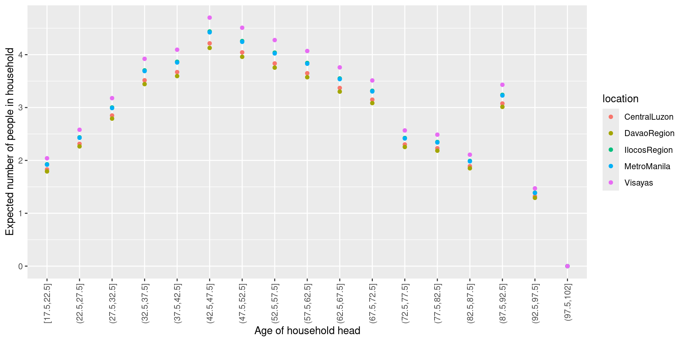

Assume that data truly generated from \(p(y \mid \theta^*)\), where \(\log p(y \mid \theta)\) satisfies certain regularity conditions (e.g. twice continuously differentiable) and \(\theta^*\) is in the interior of the parameter space
As \(n \rightarrow \infty\), \[
\hat{\theta} \stackrel{D}{\longrightarrow} N(\theta^*, H(\theta^*)^{-1})
\]\(H(\theta^*)\) is the hessian of \(\log p(y \mid \theta)\) (Fisher information matrix) evaluated at \(\theta^*\)
Hence \(\hat{\theta}\) attains smallest variance among all asymptotically unbiased estimators (Cramer-Rao lower bound)
Logistic regression
Logistic regression
Let \(Y_i \sim \mbox{Bern}(\pi_i)\), where \[
\log \left( \frac{\pi_i}{1 - \pi_i} \right)= x_i^T \beta
\Longleftrightarrow
\pi_i = \frac{1}{1 + e^{-x_i^T \beta}}
\] To estimate \(\beta\) we consider MLE. Recall: if \(Y_i \sim \mbox{Bern}(\pi_i)\), \[
P(Y_i=y_i)= \pi_i^{y_i} (1-\pi_i)^{1-y_i} = \begin{cases} \pi_i \mbox{ if } y_i=1 \\ 1-\pi_i \mbox{ if } y_i=0 \end{cases}
\] where \(y_i\) is the observed value of \(Y_i\)
ggplot(fitpred, aes(num_char, predprob)) +geom_line() +labs(x="Number of characters", y="Estimated spam probability")
Exercise
Fit a model with an interaction numchar:re_subj. For what value of re_subj is the estimated effect of numchar stronger?
What’s the estimated odds ratio for +10 characters
For the group where re_subj is 0?
For the group where re_subj is 1?
Is the interaction statistically significant (at the usual 0.05 level)?
Plot the estimated spam probability vs. numchar and re_subj. Does it look similar to the predictions from the model with no interaction? (previous slides)
Turn in an html with your solution here. Name your file firstname_lastname.html
mygrid=data_grid(fHH, aged, location, .model=fit)fitpred=add_predictions(mygrid, model=fit)fitpred$predmean=exp(fitpred$pred)ggplot(fitpred, aes(x=aged,y=predmean,group=location, color=location)) +geom_point() +theme(axis.text.x =element_text(angle =90, vjust =0.5, hjust=1)) +labs(x='Age of household head', y='Expected number of people in household')
Code
mygrid=data_grid(fHH, aged, roof, .model=fit)fitpred=add_predictions(mygrid, model=fit)fitpred$predmean=exp(fitpred$pred)ggplot(fitpred, aes(x=aged,y=predmean,group=roof, color=roof)) +geom_point() +theme(axis.text.x =element_text(angle =90, vjust =0.5, hjust=1)) +labs(x='Age of household head', y='Expected number of people in household')

Code
mygrid=data_grid(fHH, age, location, .model=fit2)mygrid=mutate(mygrid, age2= age^2)fitpred=add_predictions(mygrid, model=fit2)fitpred$predmean=exp(fitpred$pred)ggplot(fitpred, aes(x=age,y=predmean,group=location,color=location)) +geom_line() +theme(axis.text.x =element_text(angle =90, vjust =0.5, hjust=1)) +labs(x='Age of household head', y='Expected number of people in household') +ylim(0,5)
Code
mygrid=data_grid(fHH, age, roof, .model=fit2)mygrid=mutate(mygrid, age2= age^2)fitpred=add_predictions(mygrid, model=fit2)fitpred$predmean=exp(fitpred$pred)ggplot(fitpred, aes(x=age,y=predmean,group=roof,color=roof)) +geom_line() +theme(axis.text.x =element_text(angle =90, vjust =0.5, hjust=1)) +labs(x='Age of household head', y='Expected number of people in household') +ylim(0,5)
Exercise
Based on the plot below, an interaction roof vs. age and age\(^2\) may be needed. Add them to the model and display the model predictions as a function of age & roof
Alternatively, deviance residuals. They compare the log-likelihood of \(y_i\) at \(\mu_i=\hat{\mu}_i\) relative to a model with perfect prediction \(\mu_i= y_i\)
Pearson/deviance residuals are used like residuals in ordinary linear regression
Example
Take the household occupancy data with a quadratic age effect
If the assumed \(V(y_i \mid x_i)\) is correct, the variance of Pearson residuals
Should be \(\approx 1\)
Should be constant as \(\hat{y}_i\) varies
Over-dispersion
A popular way to estimate over-dispersion \(\phi\). \[
\hat{\phi}= \frac{\sum_{i=1}^n e_i^2}{n-p}
\] where \(e_i\) are Pearson residuals. If \(\hat{\phi}\) much larger than 1, there is over-dispersion
Result. If there is over-dispersion, \(\hat{\beta}\) has variance \(\phi V(\hat{\beta})\), where \(V(\hat{\beta})\) is the covariance matrix given by standard theory returned by glm
One may then adjust the MLE variance \(V(\hat{\beta})\) into \[V_Q(\hat{\beta})= \hat{\phi} V(\hat{\beta})\] where \(V_Q\) stands for “quasi-likelihood”
Call:
glm(formula = total ~ location + roof + age + age2, family = poisson(),
data = fHH)
Coefficients:
Estimate Std. Error z value Pr(>|z|)
(Intercept) -4.286e-01 1.865e-01 -2.298 0.02159 *
locationDavaoRegion -1.655e-02 5.384e-02 -0.307 0.75855
locationIlocosRegion 6.299e-02 5.269e-02 1.195 0.23194
locationMetroManila 5.322e-02 4.721e-02 1.127 0.25967
locationVisayas 1.168e-01 4.196e-02 2.784 0.00537 **
roofStrong Material 4.752e-02 4.359e-02 1.090 0.27564
age 7.040e-02 6.904e-03 10.198 < 2e-16 ***
age2 -7.034e-04 6.419e-05 -10.958 < 2e-16 ***
---
Signif. codes: 0 '***' 0.001 '**' 0.01 '*' 0.05 '.' 0.1 ' ' 1
(Dispersion parameter for poisson family taken to be 1)
Null deviance: 2362.5 on 1499 degrees of freedom
Residual deviance: 2186.6 on 1492 degrees of freedom
AIC: 6575.5
Number of Fisher Scoring iterations: 5
summary(fit2q)
Call:
glm(formula = total ~ location + roof + age + age2, family = quasipoisson,
data = fHH)
Coefficients:
Estimate Std. Error t value Pr(>|t|)
(Intercept) -4.286e-01 2.219e-01 -1.931 0.0536 .
locationDavaoRegion -1.655e-02 6.405e-02 -0.258 0.7961
locationIlocosRegion 6.299e-02 6.268e-02 1.005 0.3151
locationMetroManila 5.322e-02 5.616e-02 0.948 0.3435
locationVisayas 1.168e-01 4.992e-02 2.341 0.0194 *
roofStrong Material 4.752e-02 5.185e-02 0.916 0.3596
age 7.040e-02 8.212e-03 8.573 <2e-16 ***
age2 -7.034e-04 7.636e-05 -9.212 <2e-16 ***
---
Signif. codes: 0 '***' 0.001 '**' 0.01 '*' 0.05 '.' 0.1 ' ' 1
(Dispersion parameter for quasipoisson family taken to be 1.414991)
Null deviance: 2362.5 on 1499 degrees of freedom
Residual deviance: 2186.6 on 1492 degrees of freedom
AIC: NA
Number of Fisher Scoring iterations: 5
Over-dispersion
Easier to compare visually with multiplot from package coefplot
multiplot(fit2, fit2q)
Bootstrap
Function bootGLM at routines.R implements the bootstrap for GLMs
bootGLM
function (data, formula, family, level = 0.95, R = 2000)
{
require(tidyverse)
require(boot)
fit = glm(formula, data = data, family = family)
bootfit = boot(data, mleGLM, R = R, formula = formula, family = family)
ans = bootCI(fit, bootfit, level = level)
return(ans)
}
mleGLM
function (data, indices = 1:nrow(data), formula, family)
{
if (missing(family))
stop("family must be specified")
fit = glm(formula, data = data[indices, ], family = family)
return(coef(fit))
}
Dataset campuscrime.txt from the Beyond MLR book has number of crimes for \(n=81\) institutions
type: college (C) or university (U)
nv: number of violent crimes for the institution in 1 year
enroll1000: number of students enrolled at the school (thousands)
region: region of the USA (C = Central, MW = Midwest, NE = Northeast, SE = Southeast, SW = Southwest, and W = West)
Turn in an html with your solution here. Name your file firstname_lastname.html
Goal. Study how crimes differ between college and university, after accounting for enrollment and region
Fit a Poisson regression for crimes vs. type, enroll1000 and region. Does type have a statistically significant effect at the 0.05 level?
Provide a point estimate and a 95% interval for the ratio of expected crimes in university / college, that is \[
\frac{E(y_i \mid x_{i1}=U, x_{i2},\ldots,x_{ip})}{E(y_i \mid x_{i1}=C, x_{i2},\ldots,x_{ip})}
\]
Is there evidence for over-dispersion? If so, use an over-dispersion adjustment to obtain valid 95% intervals. Do you obtain different conclusions as to whether type has a statistically significant effect?
# A tibble: 81 × 4
type nv enroll1000 region
<chr> <int> <dbl> <chr>
1 U 30 5.59 SE
2 C 0 0.54 SE
3 U 23 35.7 W
4 C 1 28.2 W
5 U 1 10.6 SW
6 U 0 3.13 SW
7 U 7 20.7 W
8 C 0 12.5 W
9 U 19 30.1 C
10 C 4 4.43 C
# ℹ 71 more rows